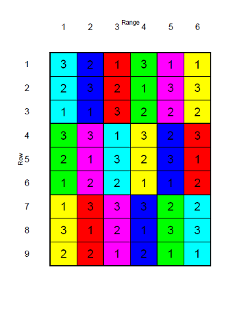

| replicate | A | B | C | D |
|---|---|---|---|---|
| 1 | 1120 | 1240 | 1360 | 1480 |
| 2 | 880 | 940 | 1080 | 1170 |
| 3 | 1120 | 1250 | 1440 | 1570 |
| 4 | 1240 | 1360 | 1340 | 1420 |
| 5 | 1310 | 1440 | 1460 | 1560 |
Introduction to Trial Design
Adam H. Sparks
Curtin Biometry and Agricultural Data Analytics
September 5, 2024
Outline
Interactive session with exercises throughout
- Role of the Experimental Design
- Local Controls of Variability
- Replication
- Randomisation
- Blocking
Outline
Designs
- Complete Randomised Design;
- Randomised Complete Block Design (RCBD);
- Split plot and
- OFE Strip Trial
Role of Experimental Design
Good Experimental Design

Poor Experimental Design
Sources and Controls of Variability
Data Collection
Technique used for collecting the data — affects variation and may introduce bias, e.g.
- Bad calibration of the measuring equipment;
- Human error when measuring/recording;
- Operators/scorers differences in measuring/assessing (inter and intra-rater repeatability).
Trial Placement
Small Plot Trial Placement
OFE Paddock Scale or Strip Design Trial Placement
Blocking
Blocking
- the plots are grouped in blocks such that the variability of the plots within the blocks is less than that among all plots prior to grouping.
Blocking
- In field trials blocking is often done on the basis of soil fertility and moisture trends, i.e., soil homogeneity;
- On a sloping trial site the moisture differs at different levels of the slope;
- Blocks are usually chosen at different levels up the slope so the that the difference in moisture between blocks is maximised and the difference in moisture within the blocks is minimised;
- A trial site known to have different soil fertility trends should be blocked accordingly, separating the blocks based on the soil quality.
Blocking Example
Blocking Exercise
Exercise (2 min)
What do you think blocking did that made this experiment useable?
Blocking
It is important to avoid confounding when defining blocks.
Examples:
- Different time of sowing (TOS), TOS is a treatment, is assigned to different blocks in the field;
- Different seeding rates (SR) are applied to different blocks in the field where SR is a treatment;
- Different nitrogen rates (NR) are applied to different blocks in the field where NR is a treatment;
- A complete block should contain each treatment replicated once.
Blocking Barley Varieties
Blocking Exercise
| replicate | A | B | C | D |
|---|---|---|---|---|
| 1 | 1120 | 1240 | 1360 | 1480 |
| 2 | 880 | 940 | 1080 | 1170 |
| 3 | 1120 | 1250 | 1440 | 1570 |
| 4 | 1240 | 1360 | 1340 | 1420 |
| 5 | 1310 | 1440 | 1460 | 1560 |
Exercise (2 min)
What pattern or patterns can you see in these data?
Blocking Barley Varieties

Barley variety on the x-axis by yield (kg/ha) on the y-axis with variety represented as colour and replicate as shape.
Blocking Exercise
Source: Dr Karyn Reeves, SAGI West
Exercise (2 min)
Which design is valid?
What makes one invalid and the other valid?
Replication
Replication implies independent repetition of the basic experiment. Replication is considered very important for valid experimental results due to the fact that it:
- provides the means to estimate the experimental error variance;
- provides the capacity to increase the precision of the estimates of the treatment means;
- demonstrates the reproducibility of the results under current experimental settings; and
- provides additional data in case of non-consistent results (presence of outliers due to environmental conditions like e.g., waterlogged plots or affected by birds or elephants).
Replication
How Many?
- The number of replications affects the precision of treatment means estimates
- Should be chosen to provide acceptable power of statistical tests to identify differences between the means of treatment groups
- Consider whether the planned level of replication may be expected to give standard errors which are acceptably small
- Providing there is no huge variability, meaning:
- the area allocated to the trial is relatively homogeneous and
- the traits of interest are reasonably variable, 2 to 3 replicates should be sufficient
Pseudo-replication
Source: Dr Karyn Reeves, SAGI West
Pseudo-replication
Source: Dr Karyn Reeves, SAGI West
Exercise (5 min)
What makes this design invalid?
What would you suggest to do that would make it a valid design?
Randomisation

Trial Designs
Trial Designs
We will discuss the following four designs:
- Complete Randomised Design (CRD);
- Randomised Complete Block Design (RCBD);
- Split-plot; and
- OFE paddock-scale
Complete Randomised Design (CRD)
- CRD is the simplest design without blocking
- Treatments are allocated to the plots at random
- CRD is most useful in experimental settings where there are no other sources of variation than treatments
Complete Randomised Design (CRD)
- CRD is the simplest design without blocking
- Treatments are allocated to the plots at random
- CRD is most useful in experimental settings where there are no other sources of variation than treatments
Note
Uncommonly used in agricultural paddocks for this reason
Randomised Complete Block Design (RCBD)
RCBD is an experimental design with one blocking criterion, usually replicates.
All treatments occur an equal number of times in each block randomly.
Randomised Complete Block Design (RCBC) Exercise
Exercise (5 min)
Thinking back to the earlier barley yield example and following the description of blocking and randomisation, draw a trial map that has four varieties, A
, B
, C
and D
and five replicates (blocks) to test varietal differences in yield.
Each variety should be represented in each replicate only once.
Recognise that this is just an exercise, it is not recommended to do this by hand. Using random number tables, a sequence or random numbers generated by a computer program are preferred. AAGI can help with this.
Randomised Complete Block Design (RCBC)
| Col 1 | Col 2 | Col 3 | Col 4 | |
|---|---|---|---|---|
| Rep 1 | D | B | A | C |
| Rep 2 | B | C | D | A |
| Rep 3 | A | D | C | B |
| Rep 4 | C | D | A | B |
| Rep 5 | A | C | D | B |
Split Plot Design
Example: Lupin Seeding Rate Trial
- 6 commercial lupin varieties:
- Jenabillup (Je),
- Jindalee (Ji),
- Quilinock (Qu),
- Belara (Be),
- Mandelup (Ma) and
- Tanjil (Ta)
- 3 seeding rates
- 3 replicates
Split Plot Design Exercise
Exercise (10 min)
Draw a map that has 6 columns and 3 rows, columns 1 and 2 are the main plots in the first 1st replicate (there will be six in each replicate) and so on.
- 6 commercial lupin varieties:
- Jenabillup (Je),
- Jindalee (Ji),
- Quilinock (Qu),
- Belara (Be),
- Mandelup (Ma) and
- Tanjil (Ta)
- 3 seeding rates
- 3 replicates
Split Plot Design
Answer
Source: Dr Karyn Reeves, SAGI West
OFE Paddock Scale or Strip Design
Depending on your goals:
- A single strip is useful for demonstration and discussion,
- At least one of these should be a nil strip if you wish to measure the response of the treatments,
- Replicated treatments will provide more robust results.
OFE Strip Trial
Exercise (10 min)
Design a randomised complete block strip trial design with three replicates.
Strips will be arranged to overlay 2-3 farm management units (soil types, soil restraints), consider the 3-soil paddock I showed earlier.
Treatments:
- Depth of seeding: 5, 10cm
- Fertiliser: Standard Rate(S), Nil (N)
OFE Strip Trial Design
One Possible Answer

Complete randomised strip plot trial with four treatments and three replicates
Wrapping Up
Remember
- Keep the treatments simple,
- complexity adds cost and time;
- and weakens the ability of the trial to measure differences
- Replicate;
- Randomise;
- Talk with AAGI first, it may save you time, money and headaches!
To consult the statistician after an experiment is finished is often merely to ask him to conduct a post mortem examination. He can perhaps say what the experiment died of.
- R.A. Fisher, (1938)
Thank You
References

Fisher, Ronald. A. 1938. “Presidential Address to the First Indian Statistical Congress.” In Sankhya, 4:14–17.